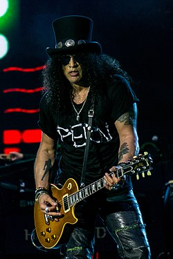
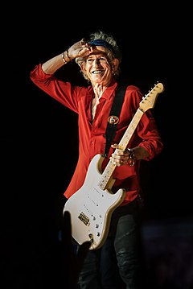
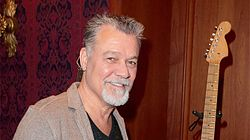
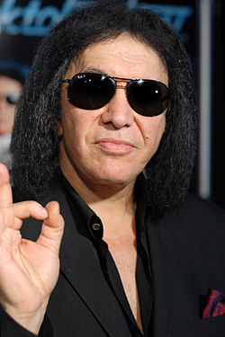
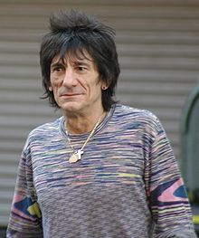

Powerage (1978)
Powerage é o quinto álbum de estúdio da banda australiana de hard rock AC/DC, lançado em 25 de Maio de 1978, e também é o primeiro álbum que não contém uma faixa homônima.
O álbum conta com faixas históricas que vieram a se tornar um dos maiores clássicos de todos os tempos. Guitarristas como
Slash ,
Keith Richards,
Eddie Van Halen,
Gene Simmons,
Ron Wood, afirmam sua paixão pelo AC/DC, tendo como em especial o álbum Powerage.
É o primeiro trabalho com o baixista
Cliff Williams, que entrou substituindo
Mark Evans.
Anos depois, Evans afirmou que parte do álbum contém linhas de baixo tocadas por ele.
 Saul Hudson, "Slash", é um guitarrista anglo-americano mundialmente famoso como integrante da formação clássica da banda Guns N' Roses,
com quem alcançou sucesso mundial.
Em sua carreira posterior, Slash integrou algumas outras bandas de diversos estilos, bem sucedidas em sua maioria.
 Keith Richards é um cantor, músico, compositor e ator britânico, considerado um dos grandes nomes do rock do século XX.
Richards é mais conhecido como integrante do The Rolling Stones e é considerado um dos mais influentes guitarristas da história, sendo eleito o 4° maior guitarrista de todos os tempos pela revista americana Rolling Stone.
 Edward Lodewijk Van Halen, "Eddie Van Halen", foi um guitarrista, compositor e produtor musical norte-americano nascido nos Países Baixos, co-fundador da banda Van
Halen.
Um dos maiores guitarristas de todos os tempos, Van Halen ajudou a popularizar a técnica de solo de guitarra conhecida como tapping, permitindo que arpejos rápidos fossem tocados com as duas mãos no braço da guitarra. Foi eleito
o melhor guitarrista de todos os tempos, por uma votação promovida pela revista Guitar World, que contou com quase 500 mil votos.
 Gene Simmons, "Chaim Witz", é o vocalista, baixista e fundador da banda Kiss.
Simmons é mais conhecido pelo seu apelido "The Demon". Junto com o também vocalista Paul Stanley, Simmons é o único membro remanescente da formação original do Kiss, e participou de todos os álbuns da banda.
Foi eleito o 50° melhor baixista de todos os tempos pela equipe da Loudwire e o 29° melhor vocalista de heavy metal e hard rock de todos os tempos pela revista Hit Parader.
 Ronald David Wood, "Ron Wood", é um guitarrista, compositor, multi-instrumentista, artista, autor e celebridade de rádio de rock and roll britânico.
Mais conhecido como ex-integrante dos The Faces, e integrante atualmente do The Rolling Stones.
 Clifford Williams nasceu no dia 14 de Dezembro de 1949 é um baixista Inglês, conhecido por tocar pelo AC/DC desde Junho de 1977.
Clifford Williams nasceu no dia 14 de Dezembro de 1949 é um baixista Inglês, conhecido por tocar pelo AC/DC desde Junho de 1977.
 Angus McKinnon Young (31 de março de 1955) é um guitarrista e compositor, conhecido por ser guitarrista solo, compositor, líder e co-fundador da banda AC/DC.
Angus McKinnon Young (31 de março de 1955) é um guitarrista e compositor, conhecido por ser guitarrista solo, compositor, líder e co-fundador da banda AC/DC.
No ano de 2003, foi introduzido juntamente com outros membros do AC/DC no Rock and Roll Hall of Fame.
Foi considerado o 24.º melhor guitarrista de todos os tempos pela revista norte-americana Rolling Stone.
Duração do album: 39 minutos e 47 segundos
Gravadora(s): Albert Productions
Produção: Harry Vanda e George Young
 Ronald Belford Scott (Kirriemuir, 9 de julho de 1946 — Londres, 19 de fevereiro de 1980) foi um cantor e compositor australiano nascido na Escócia. Ele ficou
mundialmente conhecido por ser vocalista e compositor da banda de rock australiana AC/DC de 1974 a 1980.
Ronald Belford Scott (Kirriemuir, 9 de julho de 1946 — Londres, 19 de fevereiro de 1980) foi um cantor e compositor australiano nascido na Escócia. Ele ficou
mundialmente conhecido por ser vocalista e compositor da banda de rock australiana AC/DC de 1974 a 1980.
 Phillip Norman Hugh Rudd, nasceu com o nome de Hugh Phillip Norman Witschke Rudzevecuis. Nascido em 19 de Maio de 1954, é um baterista australiano.
Ocupou o cargo de 1975 até 1983 e novamente de 1994 até a data presente na banda AC/DC. Após a saída do baixista Mark Evans em 1977, Phil se tornou o único membro australiano na banda.
Phillip Norman Hugh Rudd, nasceu com o nome de Hugh Phillip Norman Witschke Rudzevecuis. Nascido em 19 de Maio de 1954, é um baterista australiano.
Ocupou o cargo de 1975 até 1983 e novamente de 1994 até a data presente na banda AC/DC. Após a saída do baixista Mark Evans em 1977, Phil se tornou o único membro australiano na banda.
 Harry Vanda (22 de Março de 1946), é um músico e produtor popular da Austrália, famoso por trabalhar com a banda de rock n'roll e heavy metal AC/DC
Harry Vanda (22 de Março de 1946), é um músico e produtor popular da Austrália, famoso por trabalhar com a banda de rock n'roll e heavy metal AC/DC
 Alfred Redburn Young ( 6 de novembro de 1946 - 22 de outubro de 2017) foi um músico australiano de rock, compositor e produtor musical, mais conhecido como
integrante da banda The Easybeats, o co-autor de sucessos internacionais, tais como "Friday on My Mind" e "Love Is in the Air", e por sua produção da banda de hard rock AC/DC.
Alfred Redburn Young ( 6 de novembro de 1946 - 22 de outubro de 2017) foi um músico australiano de rock, compositor e produtor musical, mais conhecido como
integrante da banda The Easybeats, o co-autor de sucessos internacionais, tais como "Friday on My Mind" e "Love Is in the Air", e por sua produção da banda de hard rock AC/DC.